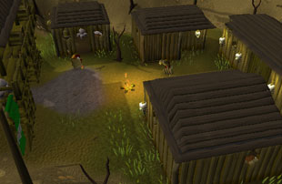
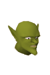
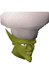

")
Goblin Village
Introduction

During the God Wars, the goblins fought in many battles, for many sides, but ultimately owed their allegiance to the 'Big High War God'. Now, without a war to fight in, the goblins have a tendency to fight among themselves. From the time of the God Wars, much has been forgotten.
Location

If you somehow manage to miss the village, though, be careful not to go too far north, past the Chaos Temple, over a ditch and into the Wilderness.
To the east of Goblin Village can be found the entrance to the Dwarven Mine (at the foot of Ice Mountain), and eventually, Edgeville and Barbarian Village.
Points of Interest

The Goblin Diplomacy quest can be started by talking to either General Bentnoze or General Wartface in the hut at the northern end of the village.
Personalities

One of the two generals that currently leads the goblins of Goblin Village, Bentnoze is in charge simply for showing himself to be strong. This is in spite of his aversion to the colour orange, which leads to him avoiding potions of Magic essence, golden warblers, Fruit Blasts, dust devils, Zamorak potions, Pineapple Punches and, er, oranges.
|

General Wartface is the other goblin in charge at the Goblin Village. He has nothing against the colour orange and this is not the only thing he and General Bentnoze do not agree upon. In fact, the two generals don't see eye-to-eye on most issues, constantly arguing as they do. The indecisions and procrastinations of the two generals cause much unrest between the other goblins in the village.
|
|
| General Bentnoze, in his blood-red body armour, can be found in the hut at the north end of Goblin Village. | General Wartface, in his grubby green garb, can be found in the hut at the north end of Goblin Village. |
|

Grubfoot is a touch smaller than your average goblins and works as a general(s') dogsbody in the village. The poor, put-upon goblin takes a lot of abuse from the generals, despite probably being more intelligent than the both of them put together.
|

Mudknuckles is the head cook of Goblin Village. What with the constant headache of preparing food for the argumentative generals, he's very motivated to find a quicker way to get meals ready. It's just a shame that his concept of 'fast food' is a little off...
|
|
| Grubfoot can also be found pacing around the hut at the north end of Goblin Village. | Mudknuckles can be found down the ladder in the hut on the eastern side of the village. |
Quests
The following quests can be started in Goblin Village:
Goblins!

There is no difference in combat level between the goblins of Goblin Village. The only difference is the colour of armour they choose to wear, either red armour, such as General Bentnoze wears...
|

...or green armour like General Wartface. Being goblins, they'll argue and fight over pretty much anything, and the colour of their armour is no exception.
|
|
| Goblins here, goblins there... | ...goblins, goblins everywhere. |
Miscellaneous
- The generals will teach you a couple of emotes - goblin bow and war dance - during the Lost Tribe quest.
- You can find the entrance to the Mind Altar to the east of Goblin Village.
- Wine of Zamorak - a Herblore secondary ingredient - can be found in the Chaos Temple to the north-west of Goblin Village.
- As you approach the village, you'll see a sign displaying the current local goblin population. Surprisingly, it's always kept up-to-date.

More articles in
Cities and Towns
|
|